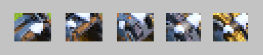
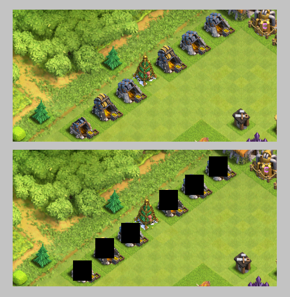
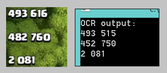

Building a smarter Clash of Clans bot

Back in 2015, I was really addicted to Clash of Clans. I think the clan wars update had just come out, and suddenly the game got a lot more competetive. Everyone I knew was trying to reach the top of the rankings and of course, that takes a lot of time and effort.
The main source of income in the game was raiding other players' bases for loot. Using some crude estimates, every "good" raid took maybe 3 minutes of searching and 2 minutes of attacking. Each good raid would net around 250,000 resources. In comparison, the cumulative cost of a single wall at Th9 back then was about 5,000,000 resources.
That roughly sums up to about 100 minutes per wall... and there were 250 walls. In the end it comes out to about 400 hours of straight raiding to max out just the walls at Th9, not even including any of the other upgrades. So I figured, this game is fun and all, but I don't really want to spend hundreds of hours trying to upgrade things.
I tried out a few of the bots floating around the web, but a lot of them were just dumb. I saw some that just randomly deployed troops, or dropped down a line of troops and waited, or just plopped everything in one spot and hoped for the best. That really wasn't good enough.

After some research, I came across the computer vision library OpenCV. One of the features it provides is image recognition. Given an image and a template, it could find the location where a match is found. The next step was to go clip images of gold mines from screenshots to use as templates.
With the gold mine sprites, I ran the matching algorithm with gold mine templates on screenshots of the game to test matching accuracy. One caveat of OpenCV was that it would only find the first instance of a match and call it a day. In order to find all matches, I had to take each match, edit out the part of the screen that was detected, and continue running on the unchecked part of the image.
Looks good! The next step was to build the actual bot. I tested out a few different Android emulators on the web, namely Bluestacks, Nox, and Andy. Nox had the most flexibility in terms of rendering options, and turned out to be the fastest running and most stable. The bot was written in C++, and contained a state machine that hooked onto the Nox App Player window using the Windows API. I then wrote a class to simulate click events and button presses within the emulator.
At runtime, the bot transitions through states from training troops, searching for a base, finding gold mines, raiding, etc. Finding good bases took another layer of work. On every base, the bot clips a snapshot of the loot potential for the base, and runs the Tesseract optical character recognition engine on the image. It outputs a guess of what the characters the screenshot contained.
One of the most annoying struggles was trying to get the OCR engine to correctly parse the Clash of Clans font. Sometimes it would mix up numbers, like confusing 5's and 6's, which meant the gold numbers were occasionally incorrect. After some testing, I was able to tweak the algorithm with training screenshots that I labeled by hand, and that significantly improved its accuracy.
After solving the problem of finding good raid targets, the next leap was actually attacking the base. The other bots that I tried didn't have the advantage of knowing where each gold mine was. By plugging in the gold mine finder from above, I could get a list of precise pixel coordinates of each gold mine in the base. Using that information, the bot was able to deploy troops efficiently around only the gold mines, and not waste time or resources on guessing. Here's a quick demo of what it looked like.
The video was recorded in bronze league, so deploying a circle of goblins around each gold mine was usually successful enough. For attacking in higher leagues, it was better to use barbarians/archers, or some mix with giants depending on where the gold mines were detected.
As for the payoff, in the ~2 minute long video, the bot earned a net of about 700,000 resources. I would just leave the bot on overnight, or keep it running while I was in class, and return home to overflowing gold storages. I didn't have to waste a single minute raiding manually.